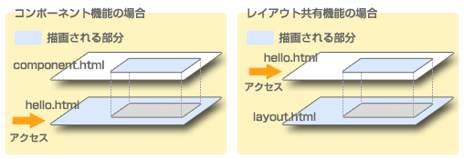
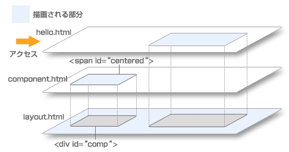
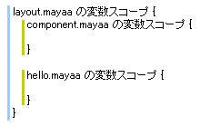

Documentation
2-7. レイアウト共有
デザインを統一する手間や全体的な変更をする際の手間を小さくするため、、複数のページでレイアウトを共有したいことがあるでしょう。Mayaa では、レイアウト用のテンプレートを用意し設定することで、そのレイアウトを複数のテンプレートで共有できます。
Mayaa のレイアウト共有機能は、コンポーネント機能の主従関係を逆転させたものだと考えると理解しやすいでしょう。主となるページがコンポーネントとして振る舞い、自分というコンポーネントを使用する「親ページ」を指定します。Web ブラウザによって直接アクセスされるのは主となるページですから、コンポーネントを使う場合とちょうど逆転する形になります。

簡単な例
まずは簡単な例として、コンポーネントの例を逆転させてレイアウト共有機能を使ってみましょう。レイアウトを定義しているテンプレートを mayaa タグの m:extends 属性で指定します。
hello.html<html> <body> <h1>DummyTitleHello</h1> <div id="content">Hello Mayaa!</div> </body> </html>hello.mayaa<?xml version="1.0" encoding="UTF-8"?> <m:mayaa xmlns:m="http://mayaa.seasar.org" extends="/layout.html"> <m:doRender m:id="content" name="contentBody" /> </m:mayaa>layout.html<html> <body> <h1>Hello</h1> <div id="contentPosition">Dummy content</div> </body> </html>layout.mayaa<?xml version="1.0" encoding="UTF-8"?> <m:mayaa xmlns:m="http://mayaa.seasar.org"> <m:insert m:id="contentPosition" name="contentBody" /> </m:mayaa>
コンポーネントの例と違う点は次の 4 点です。
- アクセスされる
hello.htmlでdoRenderプロセッサを使っている - 使われる側の
layout.htmlでinsertプロセッサを使っている insertプロセッサにpath属性を指定していないhello.mayaaでextends属性を使っている
ブラウザで http://localhost:8080/mayaa/hello.html にアクセスしてみましょう。
実行結果 (改行などは実際の実行結果と異なります)
<html>
<body>
<h1>Hello</h1>
Hello Mayaa!
</body>
</html>
実行結果は、レイアウトを定義している layout.html の <div id="contentPosition"> が、アクセスされた hello.html の <span id="content"> のボディによって置き換えられたものになっています。元のタグを出力するかどうかはコンポーネント同様 replace の値に従いますので、この例ではどちらのタグも出力されません。
■レイアウトを変更する
動作を見るため、試しにレイアウトを変更してみましょう。<h1> と <div> の順番を入れ替えてみます。
layout.html
<html>
<body>
<div id="contentPosition">Dummy content</div>
<h1>Hello</h1>
</body>
</html>
実行結果 (改行などは実際の実行結果と異なります)
<html>
<body>
Hello Mayaa!
<h1>Hello</h1>
</body>
</html>
内容を持つ hello.html を変更することなく、レイアウトの変更が反映されましたね。このように、レイアウトページを変更するだけで簡単にレイアウトを変更できます。
レイアウトページの置き換え場所を複数指定する
レイアウトの置き換え場所 (insert プロセッサを置くところ) を複数指定することもできます。置き換え場所を区別するには、コンポーネントを複数作るときと同様に名前を使います。
hello.html<html> <body> <h1>DummyTitleHello</h1> <div id="content1">Hello Mayaa! 1</div> <div id="content2">Hello Mayaa! 2</div> </body> </html>hello.mayaa<?xml version="1.0" encoding="UTF-8"?> <m:mayaa xmlns:m="http://mayaa.seasar.org" extends="/layout.html"> <m:doRender m:id="content1" name="position1" /> <m:doRender m:id="content2" name="position2" /> </m:mayaa>layout.html<html> <body> <h1>Hello</h1> <div id="contentPosition1">Dummy content 1</div> <div id="contentPosition2">Dummy content 2</div> </body> </html>layout.mayaa<?xml version="1.0" encoding="UTF-8"?> <m:mayaa xmlns:m="http://mayaa.seasar.org"> <m:insert m:id="contentPosition1" name="position1" /> <m:insert m:id="contentPosition2" name="position2" /> </m:mayaa> 実行結果 (改行などは実際の実行結果と異なります) <html> <body> <h1>Hello</h1> Hello Mayaa! 1 Hello Mayaa! 2 </body> </html>
レイアウトページにコンポーネントを追加する
レイアウト共有機能では、レイアウトに限らず画面の一部を共有することもできます。次はレイアウトページにコンポーネントを埋め込んでみましょう。使い方は普通のページからコンポーネントを使う場合と同じです。
hello.html<html> <body> <h1>DummyTitleHello</h1> <div id="content">Hello Mayaa!</div> </body> </html>hello.mayaa<?xml version="1.0" encoding="UTF-8"?> <m:mayaa xmlns:m="http://mayaa.seasar.org" extends="/layout.html"> <m:doRender m:id="content" name="contentBody" /> </m:mayaa>layout.html<html> <body> <h1>Hello</h1> <div id="comp">Dummy component</div> <div id="contentPosition">Dummy content</div> </body> </html>layout.mayaa<?xml version="1.0" encoding="UTF-8"?> <m:mayaa xmlns:m="http://mayaa.seasar.org"> <m:insert m:id="comp" path="/component.html" /> <m:insert id="contentPosition" name="contentBody" /> </m:mayaa>component.html<html> <body> <h1>dummy for preview</h1> <span id="centered"> <div style="text-align: center">component value</div> </span> </body> </html>component.mayaa<?xml version="1.0" encoding="UTF-8"?> <m:mayaa xmlns:m="http://mayaa.seasar.org"> <m:doRender m:id="centered" /> </m:mayaa> 実行結果 (改行などは実際の実行結果と異なります) <html> <body> <h1>Hello</h1> <div style="text-align: center">component value</div> Hello Mayaa! </body> </html>
レイアウトページを使う側は、特にコンポーネントを意識しません。レイアウトページの一部だと考えれば良いだけですので、違和感なく使えます。

レイアウト共有時の変数スコープ
レイアウト共有機能を使う場合の変数スコープは、コンポーネントの場合と同様です。つまり、一番下になるレイアウトページが一番外側のスコープになります。ここはちょっと直感に合わないかもしれませんが、レイアウトページを使う側はレイアウトページの変数スコープの内側で動く形になります。
レイアウトページでコンポーネントを利用するサンプルの変数スコープは、mayaa ファイル単位で考えると図 2-7-3 のようになります。
